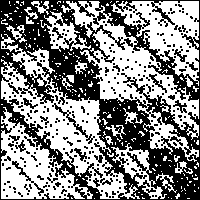
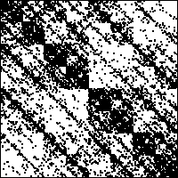
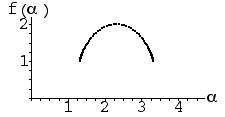
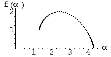
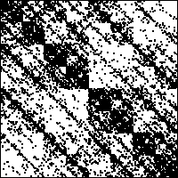

(d) 
(d) | 13. Examining the f(α) curves, we see two main similarities and two main differences. For both, the dimension of the underlying set is 2, and for both the lowest value of α occurs on a 1-dimensional subset. The differences are that the highest value of α occurs on a 1-dimensional subset for (a) and on a 0-dimensional subset for (b), and (b) has a wider range of α-values. |
| For both (c) and (d), the strong 2-3 diagonal line indicates T2 and T3 are applied with approximately equal high probabilities. In (c), addresses 1 and 4 are visited with different probabilities, while in (d) it appears that addresses 1 and 4 are visited with approximately equal probabilities. This suggests that IFS (d) corresponds to f(α) curve (a), and IFS (c) corresponds to f(α) curve (b). |
| (a) (b) |
| (c)
(d)  |
Return to Homework 5 Practice.